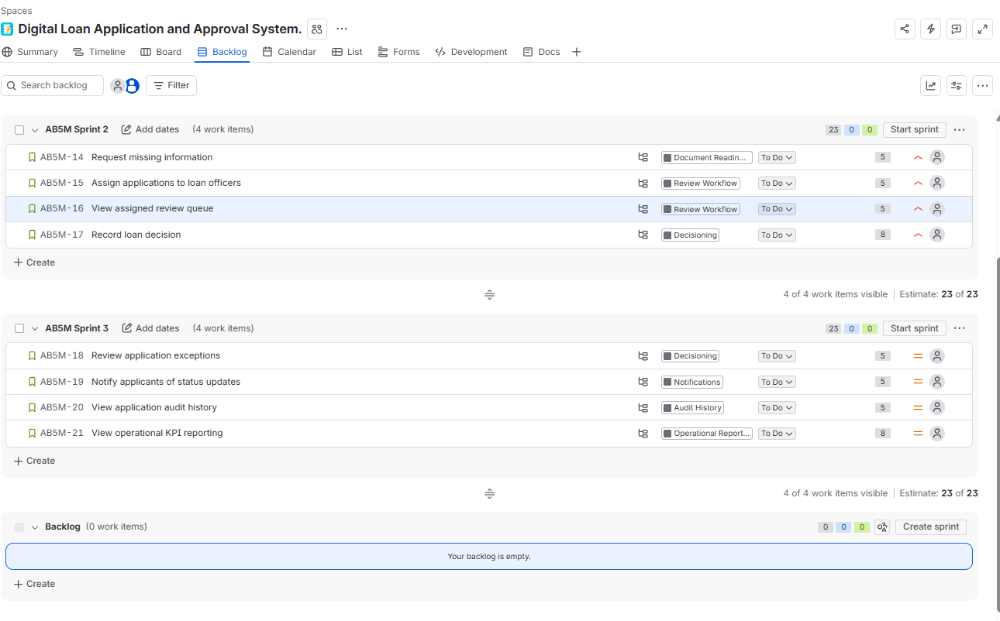

Business outputs
- Business Case, stakeholder analysis, and BRD.
- As-Is and To-Be workflow diagrams.
- User stories, acceptance criteria, priorities, and sprint planning.
End-to-end Business Analysis and Data Analytics case study for a digital loan workflow. It uses simulated data only and does not represent a real bank, customer, policy, or regulatory record.
The case documents the loan application journey from intake and validation through review, decisioning, applicant notifications, audit history, and operational reporting.
The Jira board shows a complete portfolio backlog with linked epics, story points, priorities, and implementation sub-tasks.
